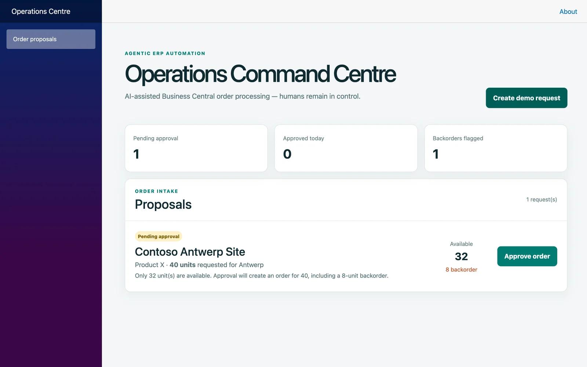
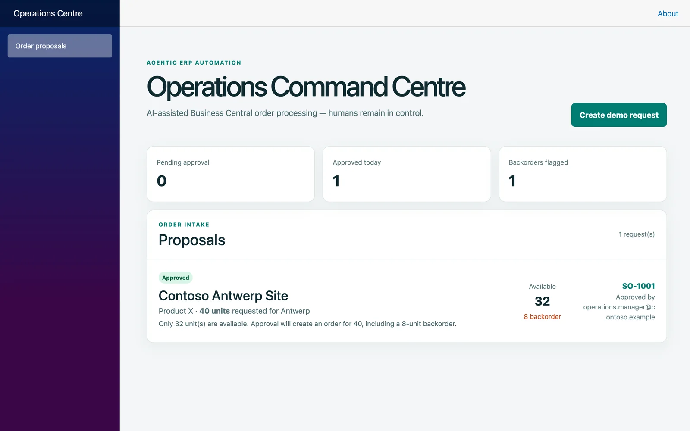
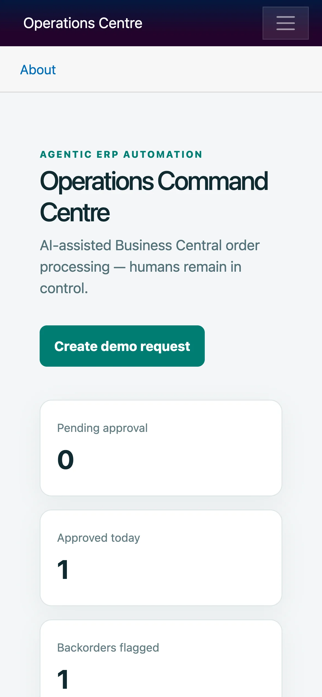

From a customer e-mail to a sales order, with a person in between.
A customer writes "please order another 40 units of product X for our Antwerp site". The platform extracts the order, looks up customer, item and stock through a Business Central client, applies the backorder rules and creates a proposal. Only an explicit approval creates the sales order, and every step lands in a tamper-evident audit trail.

Why it exists
Letting an AI agent write into the ERP is easy. Letting it guess is the problem.
Order e-mails are retyped by hand, or an automation pushes them straight into the ERP. When it misreads a product or a number, the wrong sales order exists before anyone notices, and nobody can prove afterwards what was decided and by whom.
The agent prepares, a person decides. Requests the system cannot read with certainty are refused with a reason instead of guessed. Stock and backorders are explained up front, and each step is a hash-linked audit event that breaks visibly if anyone edits it.
Try it · runs in your browser
Send a request through the whole flow
This runs a JavaScript port of the extractor, the Business Central demo adapter, the proposal rules and the hash-chained audit trail. Both versions answer a shared set of cases in CI. Create a proposal, approve it, then edit an audit event and verify the chain.
Stock and sales orders are simulated in your browser and reset on reload. Hashes are real SHA-256, computed with the Web Crypto API.
How it works
Clean layers, one deliberate gate
A Business Central boundary
IBusinessCentralClient hides the ERP. The demo uses a seeded in-memory adapter; the production seam targets the Business Central API without changing the workflow.
Refuse instead of guess
Unknown or multiple products, unknown sites, zero or absurd quantities return HTTP 400 with the reason. A quantity next to a unit wins over other numbers in the text.
Proposal, then approval
Proposals start as Pending approval. Approval is serialised, so a double click or two reviewers at once still create exactly one sales order.
Tamper-evident audit
Every event stores the previous hash and its own SHA-256. Verify() recomputes the chain; any edit, deletion or reordering breaks it.
The flow, step by step
Replace the deterministic extractor with Azure OpenAI or Copilot Studio and the rest of the flow stays the same: the model proposes, the rules and the person decide.
Screens
What it looks like
The real Blazor dashboard and API, run locally with scripts/run-local.sh and captured with Playwright.


Evidence
What is real, and what is not
Building this page turned up eleven issues in the original code, from silently ordering the wrong product to a 500 on large numbers. All are fixed and covered by checks that run in CI.
REAL Built and verified
- Layered .NET 10 solution: Domain, Application, Infrastructure, API and a Blazor dashboard
- Deterministic extraction with refusals, inventory and backorder rules, explicit approval
- SHA-256 hash-chained audit trail with verification and tamper tests
- Was deployed to Azure Container Apps; hosting was retired on 12 October 2026 to stop costs (documented)
SIMULATED Mocked or not built yet
- Business Central is a seeded in-memory adapter: one customer, two items
- The extractor is rule-based; an LLM (Azure OpenAI, Copilot Studio) is the planned replacement
- Proposals and audit events live in memory and reset when the API stops
- No real customer data and no sandbox work presented as production experience
Run it yourself
Run it locally
Requires the .NET 10 SDK and curl. No Azure account, Business Central licence or AI key.
git clone https://github.com/phlppgdfry/business-central-agentic-operations
cd business-central-agentic-operations
bash scripts/run-local.sh
# Dashboard: http://localhost:5058 · API: http://localhost:5057
# checks, as in CI
dotnet run --project tests/AgenticOperations.Tests --configuration Release
node scripts/check-browser-port.mjs